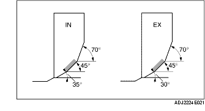

INSPECTION/RÉPARATION DU SIÈGE DE SOUPAPE
B3E011010280E01
1. Mesurer la largeur de contact du colet de soupape et du siège de soupape à l'aide du produit de rodage pour soupape (câble rouge).
-
• Si la valeur mesurée se situe en dehors de la plage de valeurs spécifiées, rectifier le siège de soupape à l'aide d'une fraise pour siège de soupape à 45°, ou rectifier le collet de soupape, ou effectuer les deux opérations.

-
Largeur de contact standard de siège de soupape
-
0,8-1,4 mm {0,032-0,055 in}
2. Vérifier que la position du siège de soupape est au centre de la surface de soupape.
-
• Si la position de siège est trop haute, corriger le siège de soupape à l'aide d'une fraise pour siège de soupape à 70° (IN) 70° (EX), et d'une fraise pour siège de soupape à 45°.
-
• Si la position de siège est trop basse, corriger le siège de soupape à l'aide d'une fraise pour siège de soupape à 35° (IN) 30°, et d'une fraise pour siège de soupape à 45° .
3. Vérifier l'enfoncement du siège de soupape. Mesurer la longueur de saillie (dimension L) de la tige de soupape à l'aide d'une soupape de longueur standard.
-
• Si elle dépasse le maximum, remplacer la culasse.
-
Enfoncement standard de siège de soupape
-
39,29 mm {1,5468 in}